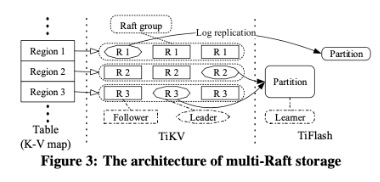
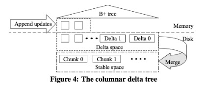

最近尝试对分布式数据库进行学习，才了解到目前的主流分布式事务型数据库，其底层也是基于LSM树的
于是为了探究LSM树如何实现分布式以及如何实现事务控制，开始从单机场景的LevelDB，到支持分布式结构化数据表的BigTable，再到支持分布式事务的Spanner（NewSQL），以及在Spanner基础上增加列式存储支持的TiDB（HTAP）进行一系列基本的学习和整理
LSM Tree
LSM tree 是许多key-value型或日志型数据库所依赖的核心数据结构，例如 BigTable、HBase、LevelDB、RocksDB等
LSM树的核心特点是利用顺序写来提高写性能，通过牺牲小部分读性能换来高性能写。考虑到磁盘或内存的连续读写性能远高于随机读写性能，使LSM树成为非常流行的存储结构
- 写入（批量）：LSM树通过将写入数据（Key-Value键值）首先存储在内存中，在数据量达到一定的阈值后将内存中的所有数据按Key值排序形成SSTable(Sorted String Table)的结构写入磁盘
- WAL(Write-ahead logging，预写式日志)：为了防止数据在内存中因为宕机等原因丢失数据，在写入内存的同时预写进日志并落盘，来保证数据的可靠性。
- 读取（随机）：对磁盘中的SSTable逐个查询，查找当前读的Key是否存在与该SSTable（可以通过索引/布隆过滤器来优化查找速度），有则根据SSTable对应的跳表或者红黑树结构查找对应的Value（一般维护一个稀疏索引来记录部分Key的在SSTable文件中的offset）
- 合并：对于某个Key，在完成多次更新操作后，除了最新的那条记录外，其他的记录都是冗余无用的，但是仍然占用了存储空间。因此需要进行Compact操作(合并多个SSTable)来清除冗余的记录，另外因为SSTable是有序的，可以通过归并的方式对多个SSTable进行合并
与另一个经典的B+树相比，巧妙的避免了在磁盘进行随机写的情况，但也导致无法通过随机读写完成更新删除操作，需要额外的开销来进行处理（读写放大问题）
PS：B+树中数据在磁盘以表的形式存储，LSM树一般以Key-Value键值对为基础进行储存
LevelDB
LevelDB应该时对LSM树一个经典的实现方案，核心在于对SSTable以层次结构，逐Level归并将大量SSTable合并成少量SSTable，从而降低文件数量、提高搜索效率同时及时剔除过期数据，降低磁盘占用
- Memtable在内存中使用跳表存储数据，维护一个有序的Key序列
- Memtable在达到容量上限后转换成Immutable Memtable，准备写入磁盘
- 在磁盘上以SSTable(Sorted String Table)的形式存储数据，同时在SSTable数量达到一定程度时可以通过Compact操作将多个SSTable合并成少量SSTable
- 合并过程以层级结构进行提现，每次合并层级+1
- Manifest文件记录各个SST层级以及Key的范围(读操作时首先根据此处记录的Key范围进行判断)
- 不同于es，会对内存中的Memtable进行查询，即支持实时读
BigTable
Google经典的三篇论文之一，提供了一种分布式结构化数据表方案。
- 设计Chubby负责元数据存储和主服务器选择
- 主服务器负责子表服务器的管理和子表分配
- 使用SSTable作为数据存储格式，存储在GFS上，基于键进行查询
- 存储逻辑可以表示为(row:string, column:string, time:int64)→string，通过这样将结构化数据表表达为key-value的形式进行存储
HBase
https://zhuanlan.zhihu.com/p/159052841
HBase是BigTable的一种实现，是Hadoop生态下核心技术之一
PS：有些地方将HBase的数据模型表达为列式存储，但这跟OLAP的列式存储不是一个概念，可以理解为介于行式和列式之间的面向列族的存储模型
HBase数据存储结构中主要包括：表、行、列族、列限定符、单元格和时间戳，读写操作主要依赖于行键RowKey
整个数据时按照RowKey进行字典排序的，而相同RowKey的数据以(列族, 类限定符)作为Key来定位Value，于是相同一行的数据中列族相同的数据是顺序存放的，此为column-oriented，不同于将不同行同一列顺序存放的列式存储
HBase由三种类型的服务器以主从模式构成：
- Region Server：负责数据的读写服务，用户通过与Region server交互来实现对数据的访问
- HBase HMaster：负责Region的分配及数据库的创建和删除等操作
- ZooKeeper：负责维护集群的状态（某台服务器是否在线，服务器之间数据的同步操作及master的选举等）
Spanner
解读Google Spanner - 知乎 (zhihu.com)
使用 KV 引擎存储结构化数据 - 知乎 (zhihu.com)
考虑到BigTable在应用中仍然存在一些问题
- 缺少类似SQL的界面，缺少关系数据库拥有的丰富的功能
- 只支持单行事务，缺少跨行事务
- 需要在跨数据中心的多个副本间保证一致性
Spanner是Google公开的新一代分布式数据库，它既具有NoSQL系统的可扩展性，也具有关系数据库的功能。例如，它支持类似SQL的查询语言、表连接以及分布式事务
- 采用了Megastore的数据模型，Chubby的数据复制和一致性算法，同时基于BigTable提供可扩展性
- 使用高精度和可观测误差的本地时钟来判断分布式系统中事件的先后顺序，从而保证事务一致性
数据模型
Spanner继承了Megastore的设计，数据模型介于RDBMS和NoSQL之间，提供树形、层次化的数据库schema
- 一方面支持类SQL的查询语言，提供表连接等关系数据库的特性，功能上类似于RDBMS
- 一方面整个数据库中的所有记录都存储在同一个key-value大表中，实现上类似于BigTable
Spanner通过将父表的主键作为子表主键的前缀来反映表之间的层次关系（一对多），并且将根节点表中的一条记录，和以其主键作为前缀的其他表中的所有记录的集合称作一个Directory，作为分区、 复制和迁移的基本单位
一致性
Spanner使用Paxos协议在多个副本间同步redo日志，从而保证数据在多个副本上是一致的
分布式事务
Spanner 系统中的分布式事务通过两阶段提交协议2PC实现。2PC可以保证当一个分布式事务涉及了多个数据节点时，在这些节点上的操作要么全部提交，要么全部失败，进而保证整个分布式事务的原子性（ACID里的A）。
协议中包含两个角色：协调者coordinator和参与者participant/cohort。协调者是分布式事务的发起者，而参与者是参与了事务的数据节点，大致流程如下
协调者向所有的参与者发送投票请求，每个参与者决定是否要提交事务。如果打算提交的话需要写好redo、undo等日志，并向协调者回复yes或no
协调者收到所有参与者的回复，如果都是yes，那么决定提交这个事务，写好日志后向所有参与者广播提交事务的通知。反之，则中止事务并且通知所有参与者
除了保证一致性以外，分布式事务的另一个问题是需要保证事务间执行的顺序性，这固然可以通过多次通信来进行保证，但Spanner提出了另一种解决方案，即借助时间来判断先后顺序
TrueTime API是一个提供本地时间的接口，可以返回一个时间戳t，并给出一个误差ε
Spanner通过TrueTime API在保证误差范围内上一个事务已经确保完成且不会与下一个事务重叠时才对上一个事务进行提交
TiDB
https://zhuanlan.zhihu.com/p/494715695
https://developer.aliyun.com/article/802291#slide-4
TiDB是一个开源的NewSQL数据库，支持HTAP（Hybrid Transactional and Analytical Processing），既支持事务型操作，也支持数据分析
TiDB包括3个核心组件：分布存储层，Placement Driver，计算引擎层
存储层分为行存的TiKV和列存的TiFlash

把key值按照range分区，每个分区称为一个Region，而每个Region对应一个Raft Group，对应有且仅有一个leader，多个follwer，leader异步的将log同步给TiFlash
1
2Key:{table{tableID} record{rowID}}
Value: {col0, col1, col2, col3}TiKV通过multi-Raft算法实现行存引擎，处理TP的更新和查询
TiFlash通过给Raft算法增加learner角色，异步地从leader同步log到列存引擎TiFlash，把行存格式转成列存
Placement Driver负责维护Region，包括记录元数据，对region进行迁移以实现负载均衡，以及分发timestamp，提供严格递增且全局唯一的timestamp作为事务ID（不同于Spanneer，需要额外的通信开销）
SQL引擎层是无状态化可扩展的，可以根据SQL语句动态的选择基于哪个存储引擎操作数据
其中TiDB中每个组件满足高可用和扩展性，并且TiDB还适配了Spark，集成TiDB的数据和HDFS生态
TiKV
- TiKV是对Spanner的一个开源实现，且底层本地存储依赖于RocksDB
- TiKV的MVCC 实现是通过在Key后面添加版本号来实现
TiFlash
TiFlash使用DeltaTree作为其列存引擎来支持实时更新

其中，对表数据按照主键进行range分区，并建立B+树，树的叶子节点，即切分后的数据块称为Segment，并在其内部采用了类似LSM Tree的分层结构（分为Delta层和Stable层），这样通过Segment分区降低区内数据量，可以减少LSM Tree的层数，减少读写放大
更新数据加入后，先根据主键索引在B+树中找到对应的Segment，作为增量更新进行写入，待该Segment在内存中写满后刷入磁盘的Delta层，之后Delta层通过与Stable层进行合并（Delta Merge）得到更新后的Stable层
列式存储
数据库中的 “行式存储”和“列式存储” - 腾讯云开发者社区-腾讯云 (tencent.com)
列式存储能极大提升查询效率和一定程度上提高物理存储利用率，因此适用于海量静态数据的分析场景中
1、查询过程中，可针对各列的运算并发执行，在内存中聚合完整记录集，从而提升查询效率
2、可在数据列中高效查找数据，无需维护索引，减少无关IO，避免全表扫描
3、各列独立存储且数据类型相同，可以针对该列的数据类型以及数据量动态选择压缩算法，提高物理存储利用率